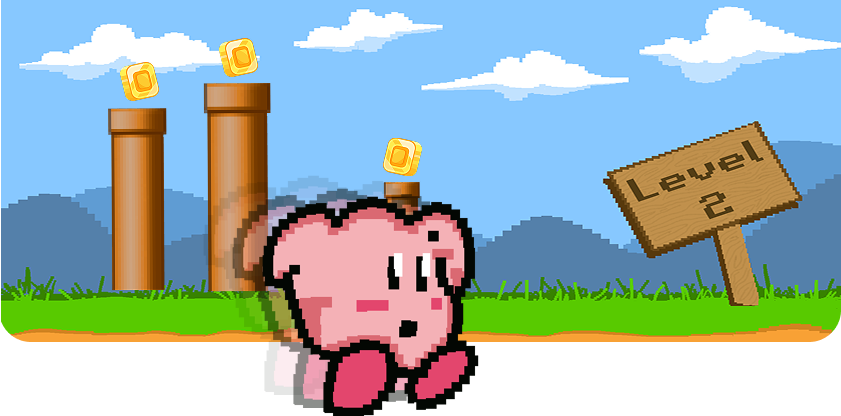
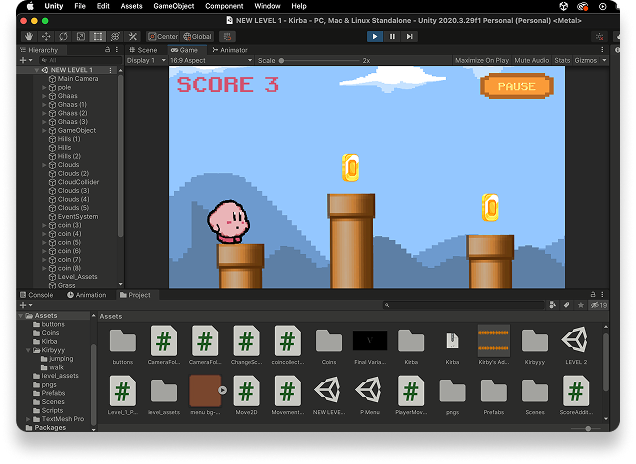
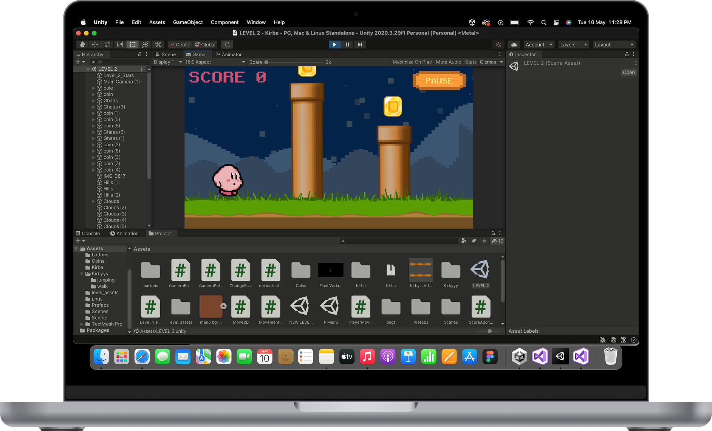
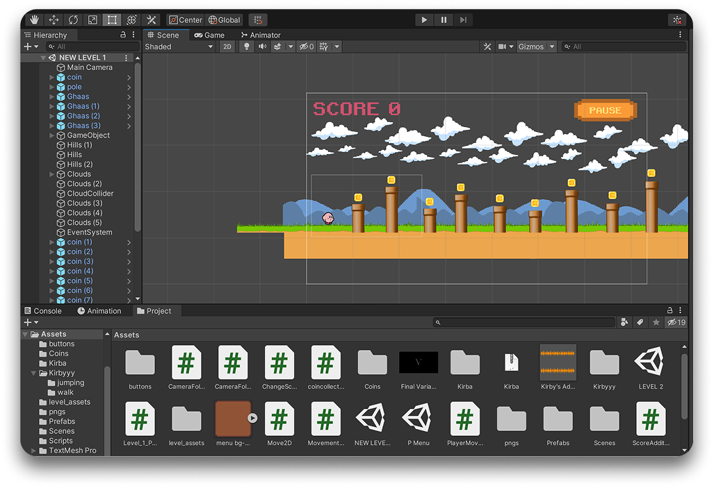
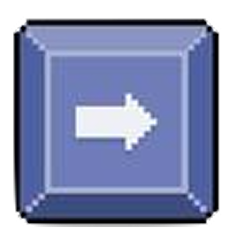
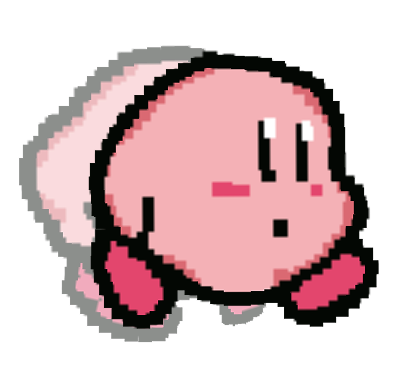
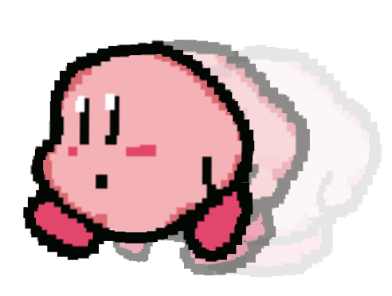
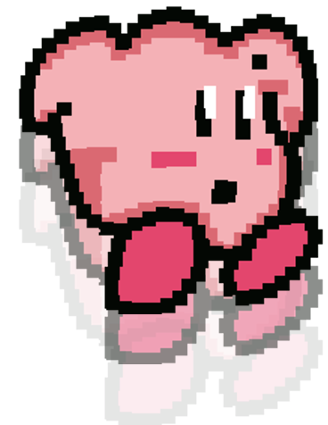

← work

Digital game design
Code
Visual design
Flappy Kirby
Desktop & Mobile app
A coded video game for desktop and android devices.
1Plot
Kirby is free. Kirby is hungry. In the game of Flappy Kirby, you have to help him clear the levels. At the end, Kirby finds the food he wanted.
2Making
This project was a done in pairs. My teammate and I, we distributed the work in terms of creative and tech roles.
She took over the roles of creating assets and graphics for the game. I was incharge of the code and development .
I used Unity Engine and Visual Studio Code to bring Flappy Kirby to life.



3How to play
Here is simple keyboard guide to how you can play Flappy Kirby.

The forward arrow key starts the game. Help Kirby run across the level field with this.

Back-track Kirby. Think you're moving too fast, or wanna step back to retrieve a missed coin? Use the back arrow key to step back.

To flap over the pillars, long press the up arrow key.

To flap down, long press the down arrow key.